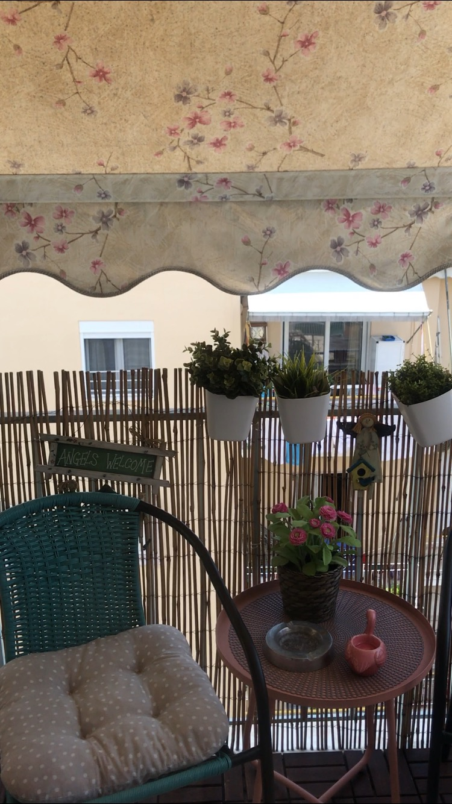

Monday: this is the beginning of your chat with Alsu
Hihi! It's been so long! I've been traveling and after taking a week off work to settle in my new Airbnb, I'm back online and on the face of this earth hah...
Alsu adjusted her timezone: Athens GMT+3
...wait I need to show you the place I'm staying at!
Let's see!
Look how cute! This is a large balcony right out of my bedroom! The whole place has so much character, I love it 😍

So I already made friends with the pastry shop owner downstairs, Mario. He said he will give me a list of islands to go visit while I'm working out of Greece.
Oh that's amazing! Have a Greek dough for me please 😊
Yes, wil do! I think those are called loukoumades here
Yes, that's right! Get the one filled with praline, my Greek friend said those are delicious!
Will try! Thank you! Chat later 😘
Thursday
Hi Alsu! How's Athens treating you?
Hi! It's been amazing! I've totally gotten over my jetlag and have found a great routine for myself.
Good to hear! Oh what is it?
I've figured out that I can work through the mornings all the way till about 2pm. That's solid 5-6 hours of work with little to none distractions in a form of an email or call. Love the timezones haha
That's cool! So what have you been doing past 2pm?
Lot's of sighseeing! Went to the Acropolis, Glyfada beaches, checked out Plaka, Monasteraki area. It's actually not far from Koukaki, that's where I'm staying. It's a nice neighrhood with cute cafes that have speacial "work rate" an don't mind you working there on your laptop. Highly recommend this area, if you are ever visiting Athens and want to stay close to action while having a tranquil little place for yourself.
That's great to know! Your travel is encouraging me to travel as well and stay longer in one place like you if I can.
I think that's the key. Otherwise, you just feel like a passerby rather than somebody who is trying to understand what the day to day life is here like.
Totally, makes sense
What are the main insights you had in the last 10 or so days that you have lived and worked there?
oh so many! Let me think!
All right.
So let me give you the a quick list:
1) get a local phone number.
Roaming charges are going to add before you know it and you don't want that kind of unnessary expense when it coyld have been easily fixed with a local SIM card. I'm with Vodafone and it's 12 euros for unlimited data for a month. That's a pretty sweet deal, right?
We like good deals :)
Ok next
2) Skype credits.
Specifically, since you are from the US, get the unlimited calls to North American phone numbers. This is when you need to call your bank, your family doctor back home. Trust me, there will be more than enough instances when you need to call that 1-800 toll free number :)
haha good one!
And the last one is more about connecting with people
3) ask questions!!
Most locals here are happy to talk to somebody and practise their English. I always ask what do they like most about their city/town and what is their favourite place in the whole city?
Those are really nice questions! I like how they go beyond the normal "small talk"!
That's the point! You want to get a feel of a place you are staying at. That's pretty difficult to do without connecting with the people of the place.
Right!
Ok, I'm off to bed. Let's chat again in couple of days!
Saturday
How is your weekend going?
It's great! I've been exploring all over Athens and it's beautiful alleys like this.

And I found a little bit of Santorini in Athens! Doesn't it look like the island?
Totally does!
Since you said you will likely come visit Athens and you are vegan, I will start making a list of vegan-friendly places for you to go to...And will have to do tasting at every spot, but we all got our battles to fight and I accept mine 😉
Thank you! That's so sweet and yes, of course, do tasting personally. Can't wait to see the list!
Stay tuned!
end of your chat with Alsu